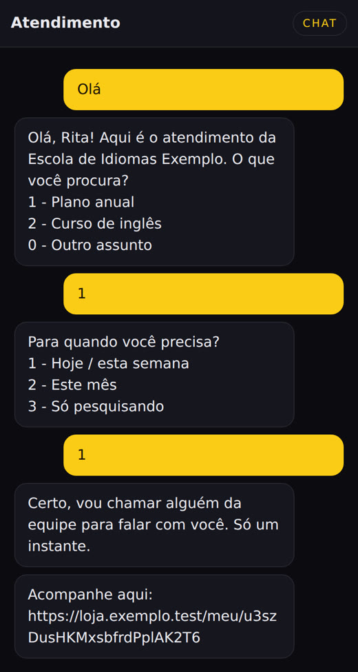
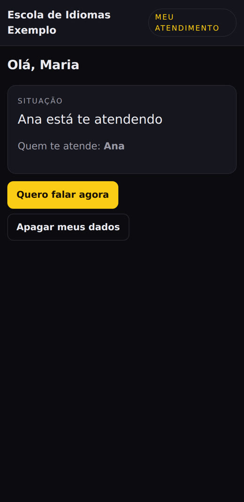
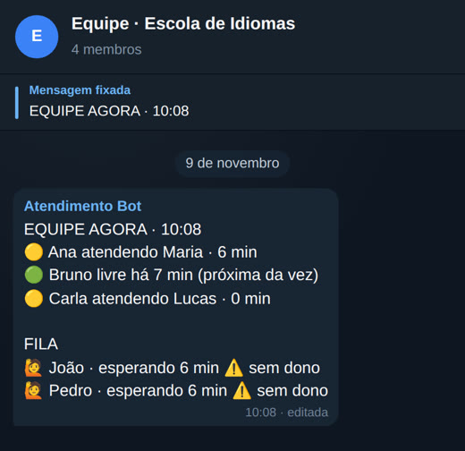
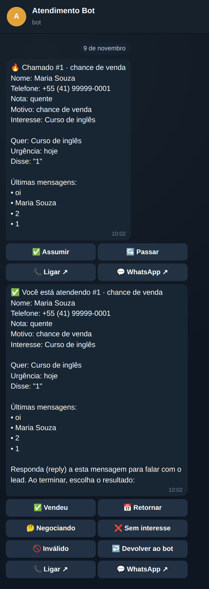
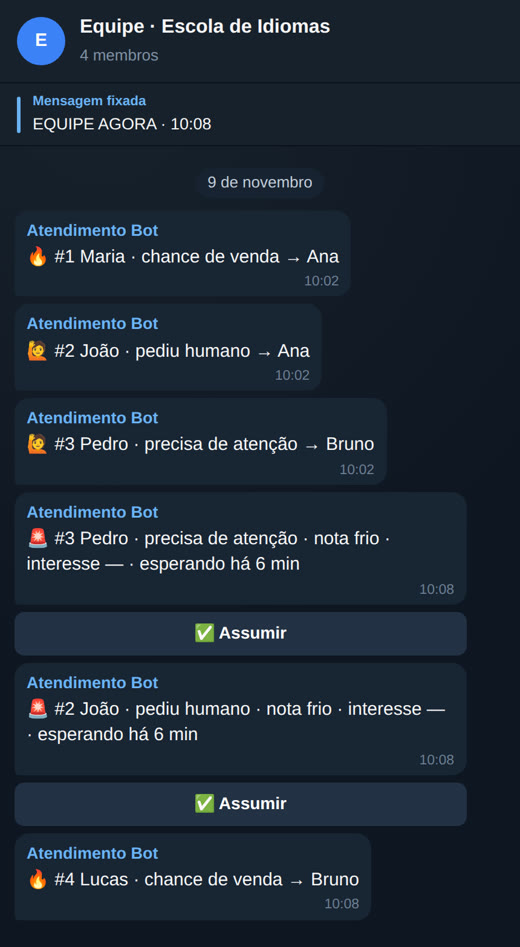
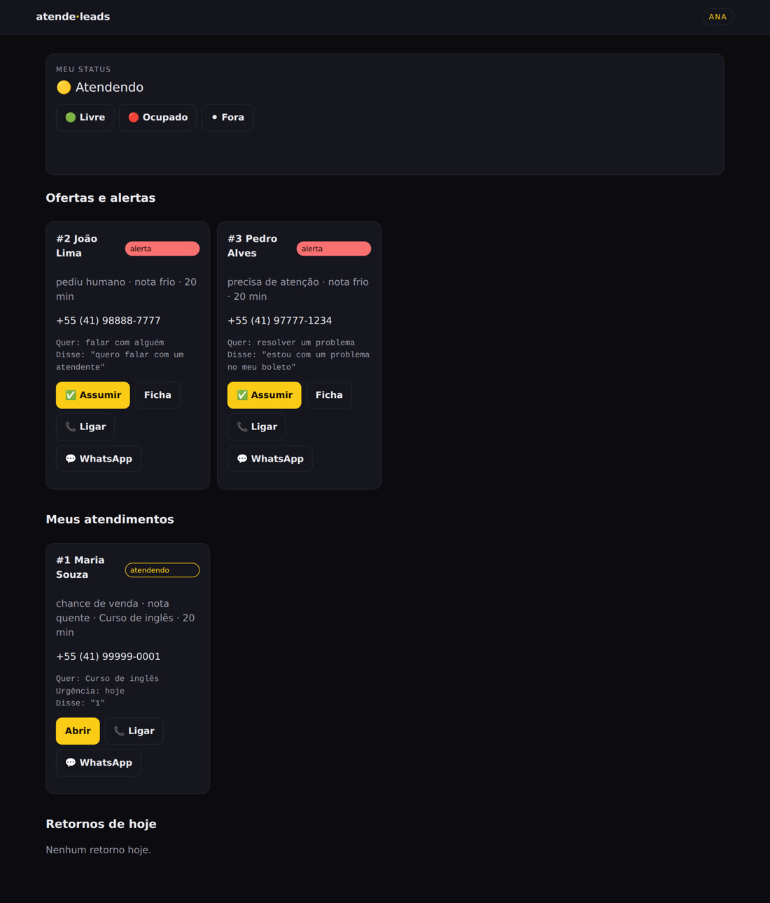
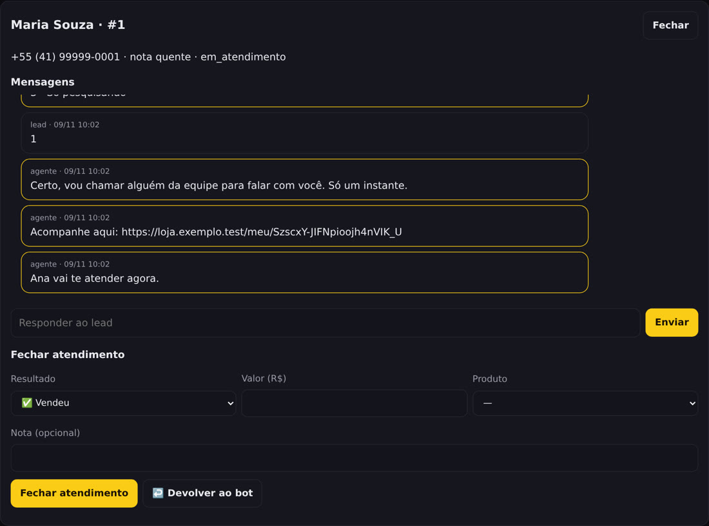
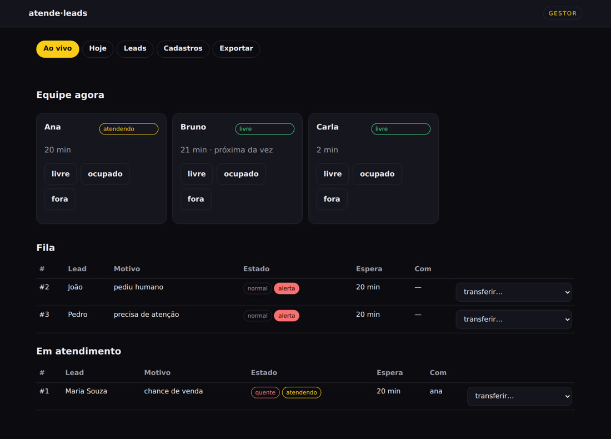
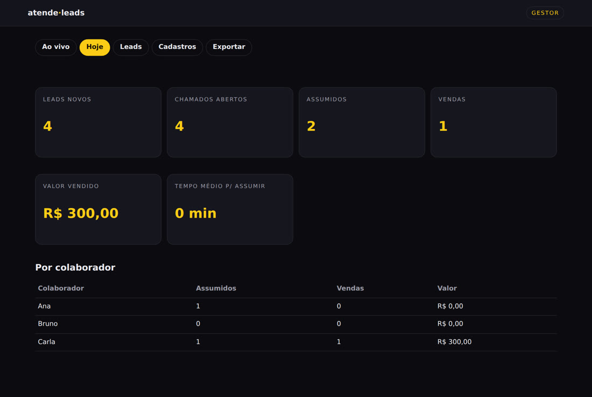

Un agente atiende en WhatsApp, califica y pasa el lead al colaborador que lleva más tiempo disponible, por Telegram, con todo lo que necesita para llamar.
La instalación en el servidor requiere un técnico: consulta Implementación en la VPS.
atende-leads es un sistema de atención de leads (clientes potenciales) por WhatsApp, pensado para pequeños negocios como una tienda, una escuela, una inmobiliaria o un prestador de servicios. Un agente responde las dudas, pregunta qué busca la persona y asigna una puntuación al lead: caliente, tibio o frío. Cuando pide hablar con alguien o muestra interés en comprar, el sistema avisa por Telegram al colaborador que lleva más tiempo disponible, con los datos y un botón para llamar. Para usarlo, necesitas un servidor (VPS) con Docker, un dominio, un número de WhatsApp exclusivo para la atención y un bot de Telegram.
El agente se encarga de la primera conversación. Cuando hay una posibilidad de venta o alguien necesita ayuda, el lead pasa a una persona del equipo, cuando le toca, y nadie queda olvidado en la fila.
Responde las preguntas frecuentes, muestra el precio solo de lo que está registrado, pregunta el nombre, qué busca y para cuándo, y asigna la puntuación del lead (caliente, tibio o frío). Funciona con Evolution API.
En 3 casos: el lead lo pide, el agente nota que hace falta (queja, problema, dos veces "no entendí") o ve una posibilidad de venta (precio, "quiero comprar", pago).
Llega en privado al colaborador que lleva más tiempo disponible: nombre, teléfono, puntuación, interés, resumen y últimos mensajes, con los botones ✅ Asumir (Assumir) · ↪️ Pasar (Passar) · 📞 Llamar (Ligar) · 💬 WhatsApp.
Si no hay respuesta en 2 min, la oferta pasa a la siguiente persona. Si un lead caliente no tiene responsable en 2 min (normal: 5) o no hay nadie disponible, se envía una alerta al grupo, y quien toque primero Asumir (Assumir) se queda con el lead.
Un mensaje fijado en el grupo, EQUIPE AGORA, muestra quién está disponible (Livre), atendiendo, ocupado (Ocupado) o fuera (Fora), y la fila de leads en espera. Se actualiza con cada cambio.
Venta (Vendeu; valor) · Devolver llamada (Retornar; fecha) · En negociación (Negociando) · Sin interés (Sem interesse; motivo) · No válido (Inválido), con una nota de texto o audio (el audio se convierte a texto solo si WHISPER_CMD está configurado en .env). El colaborador vuelve al final de la fila de disponibles.
Lead: chat, burbuja para el sitio y página «mi atención». Equipo: /equipe. Gestor: /gestor, con vista en vivo, hoy, leads, registros y exportación CSV.
El lead puede enviar PARAR o apagar meus dados. El grupo del equipo nunca recibe el teléfono ni el texto del lead: solo el nombre, el motivo, la puntuación y los tiempos.
Por defecto, el agente funciona con reglas, sin costo y sin API. Opcionalmente, puedes usar Ollama local o un endpoint compatible con OpenAI del propio negocio, con retorno a las reglas si falla.
Cada lead sigue el mismo camino. El sistema guarda todo en una base de datos SQLite en tu servidor.
Pide hablar con alguien ("atendente", "me liga"), posibilidad de venta ("quanto custa", "quero comprar", "orçamento") o necesita atención ("problema", "reclamação", "cancelar").
Los colaboradores disponibles forman una fila según la hora en que quedaron libres. Quien cierra una atención vuelve al final de la fila. Un lead que vuelve dentro de 30 días se ofrece primero a quien lo atendió.
Oferta: 2 min. Alerta: 2 min para lead caliente, 5 min para uno normal. Recordatorio de atención detenida: 30 min. Todo se puede ajustar en los registros.
Quién realiza cada paso:
El script pregunta el nombre, el dominio y Telegram; genera secretos, el .env y el dados/negocio.json; inicia Docker. Al final muestra el token del gestor: guárdalo, es la contraseña de /gestor. Más detalles en Implementación en la VPS.
./instalar-vps.sh
Abre un túnel hasta la VPS, entra al panel de Evolution en http://localhost:8081/manager, crea la instancia y lee el código QR con el número de atención. Usa un número exclusivo para esto.
ssh -L 8081:127.0.0.1:8081 usuario@vps
En /gestor → Registros: equipo (nombre, teléfono, código), productos con palabras y precio, preguntas frecuentes, horarios y plazos.
Cada colaborador envía /entrar <código> en privado al bot y toca 🟢 Libre. El código de cada persona es el que imprimió el instalador (en la prueba local, el de negocio.json, como ana-1234).
/entrar <código>
Por WhatsApp o por la burbuja de chat del sitio. Para poner la burbuja en tu sitio, pega esta línea antes de </body> en las páginas:
<script src="https://<domínio>/widget.js" async></script>
Responde las preguntas frecuentes, informa el precio registrado, califica y asigna una puntuación.
Pide hablar con alguien, necesita atención o hay una posibilidad de venta: abre el caso y envía una línea breve al grupo, sin teléfono.
Se envía en privado a quien lleva más tiempo disponible, con datos y botones. Si no responde en 2 min, pasa a la siguiente persona.
Mensaje en el grupo cuando vence el plazo o no hay nadie disponible. Quien toque primero Asumir (Assumir) se queda con el lead.
Llama (📞), responde por WhatsApp (💬) o responde en el propio bot, contestando (reply) a la tarjeta de atención.
El colaborador elige el resultado; el sistema guarda el historial, programa la devolución de llamada y devuelve al colaborador a la fila.
En /gestor: vista en vivo, hoy, leads y exportación CSV.
Una copia diaria de la base de datos y los registros, mediante el cron único que instala instalar-vps.sh, guardada en /opt/atende-leads-backups/.
docker compose exec -T atende ./atende backup ...
Para probarlo en tu computadora, basta con Python 3. Para usarlo de verdad, con WhatsApp y Telegram, necesitas lo demás.
Solo la biblioteca estándar: no hace falta pip install para ejecutarlo. Para ejecutar las pruebas, pytest.
python3 --versionUn servidor Linux con Docker y Docker Compose. La aplicación escucha solo en 127.0.0.1:8080.
docker compose versionUn proxy inverso (Caddy o Nginx) desde tu dominio hacia 127.0.0.1:8080. Los webhooks necesitan HTTPS.
Un número exclusivo para la atención, conectado mediante Evolution API. Puede iniciarse en el mismo compose (perfil evolution).
Crea el bot con @BotFather y agrégalo al grupo del equipo como administrador para que fije el panel.
Cada colaborador necesita Telegram y un código personal, que sirve para /entrar y para el panel /equipe.
dados/leads.db), sin un servidor aparte.docker-compose.yml que solo se inicia cuando se solicita, como --profile evolution./gestor; en las llamadas a la API va en el encabezado X-Token.Sin WhatsApp ni Telegram configurados, las integraciones quedan desactivadas y los paneles web funcionan. Es la forma más rápida de ver el sistema.
Clona el repositorio y entra en la carpeta.
git clone https://github.com/inematds/atende-leads.git cd atende-leads
La primera vez, el sistema copia exemplos/negocio.json a la carpeta de datos. Si el puerto 8080 está ocupado en tu computadora, usa otro (por ejemplo, --porta 8090) y cambia las direcciones en los pasos siguientes.
./atende serve --porta 8080 --dados dados
Chat del lead en http://localhost:8080/, equipo en /equipe (se ingresa con el código del colaborador) y gestor en /gestor (se ingresa con el token_gestor de dados/negocio.json).
# en el ejemplo, el token del gestor es TROQUE-ESTE-TOKEN y el código de Ana es ana-1234 grep -E '"token_gestor"|"codigo"' dados/negocio.json
Desde /gestor → Registros, o editando dados/negocio.json. El agente solo menciona precios que estén aquí. El archivo incluye datos de ejemplo (la colaboradora Ana, el «Plan anual» (Plano anual), preguntas frecuentes de una tienda): cámbialos por los tuyos antes de recibir leads reales.
{
"nome": "Loja Exemplo",
"equipe": [ { "id": "ana", "nome": "Ana", "telefone": "5541999990010", "codigo": "ana-1234" } ],
"produtos": [ { "id": "plano-anual", "nome": "Plano anual", "palavras": ["anual", "plano anual"], "preco": "R$ 1.200" } ],
"prazos": { "oferta_min": 2, "alerta_quente_min": 2, "alerta_normal_min": 5, "lembrete_min": 30 },
"cerebro": { "tipo": "regras" }
}
Con ATENDE_AGORA, el «ahora» queda fijo y puedes ejecutar las tareas programadas (ofertas vencidas, alertas, recordatorios) cuando quieras. Antes, detén el servidor del paso 2 (Ctrl+C) y ejecuta curl en una segunda terminal, porque serve ocupa la primera.
ATENDE_AGORA=2026-11-09T10:00 ./atende serve --porta 8080 --dados dados curl -X POST -H "X-Token: TROQUE-ESTE-TOKEN" "http://localhost:8080/api/tarefas/rodar"
Son 320 pruebas de contrato. El build y el contenedor Docker solo se usan con TESTAR_DOCKER=1.
python3 -m pytest -q tests/
/entrar <código> vincula tu Telegram con tu registro/livre · /ocupado · /fora cambian tu estado/meus tus atenciones · /retornos devoluciones de llamada de hoy/lead <nombre o teléfono> ficha breve/fechar <id> vendeu <valor> (o retornar, negociando, sem, invalido)/status envía el panel EQUIPE AGORA (solo en el grupo del equipo)Variables en .env.exemplo. Si faltan las variables de una integración, queda desactivada y el resto funciona (paneles web).
Antes de instalar: crea el bot en @BotFather y agrégalo al grupo del equipo. El instalador solicita el token del bot y el ID del grupo (número que empieza con -100). Para encontrar el ID, envía un comando al bot en el grupo, como /start@nome_do_bot (en el modo de privacidad predeterminado, los mensajes comunes no llegan al bot), y abre la dirección de abajo; el chat.id del grupo aparece en la respuesta. Hazlo antes de registrar el webhook (paso 6), porque después getUpdates deja de responder.
curl "https://api.telegram.org/bot<TOKEN>/getUpdates"
En la VPS, como root (o con sudo), con git, python3 y Docker instalados, clona el proyecto y ejecuta el instalador. Este genera el .env y el dados/negocio.json solo para el propietario (umask 077), el token del administrador y los códigos del equipo (aleatorios), asigna la carpeta dados/ al uid 1000 (el contenedor no se ejecuta como root; si no eres root, intenta sudo -n chown y, si no lo consigue, se detiene antes de iniciar y muestra el comando), inicia compose, con o sin Evolution, instala el cron de respaldo e imprime todo al final: guárdalo. Ejecutarlo de nuevo (cambiar el dominio, activar Telegram) no cambia los secretos: reutiliza los que ya están en .env e indica cuáles; solo genera los que faltan (una contraseña nueva de Postgres detendría Evolution, y un TELEGRAM_SEGREDO nuevo haría que el webhook de Telegram respondiera 401). El registro parte del ejemplo (la colaboradora Ana, el "Plan anual", una FAQ de tienda): reemplázalo por tus datos en /gestor → Registros antes de recibir leads. La aplicación escucha solo en 127.0.0.1:8080 y Evolution en 127.0.0.1:8081.
git clone https://github.com/inematds/atende-leads.git /opt/atende-leads cd /opt/atende-leads ./instalar-vps.sh # sem o instalador: cp .env.exemplo .env, troque todos os segredos do .env # e o token_gestor e os códigos em dados/negocio.json (12+ caracteres); # com a Evolution junto, ponha EVOLUTION_URL=http://evolution-api:8080 no .env; sudo chown -R 1000:1000 /opt/atende-leads/dados # o container roda como uid 1000 docker compose up -d --build # ou, com a Evolution junto: docker compose --profile evolution up -d --build
Si negocio.json todavía tiene token_gestor = TROQUE-ESTE-TOKEN o algún código igual al de exemplos/negocio.json, o si una integración está activada con WEBHOOK_SEGREDO/TELEGRAM_SEGREDO vacío, con menos de 16 caracteres o que contiene troque (o con EVOLUTION_API_KEY que contiene troque), el servidor solo acepta iniciarse en 127.0.0.1/localhost. En 0.0.0.0 (como en Docker), lo rechaza con el mensaje "ejecuta ./instalar-vps.sh o cambia los secretos". Solo para pruebas o demostraciones existe ATENDE_PERMITIR_EXEMPLO=1 (nunca en producción).
Proxy inverso (Caddy o Nginx) de tu dominio a 127.0.0.1:8080. El instalador ya completa url_publica en negocio.json con el dominio; revísalo. Los límites por IP (5 contraseñas incorrectas por minuto: las incorrectas reciben 429, la correcta siempre pasa; 5 conversaciones nuevas del chat web en 10 min, además de un límite total; 3 solicitudes de atención por web por hora) usan la IP de X-Forwarded-For solo cuando la conexión viene de un proxy confiable: ATENDE_PROXY_CONFIAVEL (CIDRs; el valor predeterminado cubre el loopback y las redes privadas, por donde Caddy en el host llega al contenedor). Vacío = nunca confiar en X-Forwarded-For. Solo puede hacerse cargo de un lead el colaborador a quien se le ofreció o, en una alerta 🚨, quien pulse primero en Asumir.
# Caddyfile
leads.seudominio.com { reverse_proxy 127.0.0.1:8080 }
El puerto de Evolution solo escucha en 127.0.0.1, así que abre un túnel desde tu computadora y, mientras esté abierto, accede a http://localhost:8081/manager. Inicia sesión con la API Key global (EVOLUTION_API_KEY de .env), haz clic en Instance +, ponle el nombre de EVOLUTION_INSTANCIA (predeterminado loja), el canal Baileys, guarda, abre la instancia y lee el código QR con el WhatsApp del celular (Dispositivos vinculados → Vincular dispositivo).
ssh -L 8081:127.0.0.1:8081 usuario@vps # sem o manager, pela API, na VPS: curl -X POST http://127.0.0.1:8081/instance/create -H "apikey: <EVOLUTION_API_KEY>" \ -H 'Content-Type: application/json' -d '{"instanceName":"loja","integration":"WHATSAPP-BAILEYS","qrcode":true}'
Evento MESSAGES_UPSERT para la dirección de abajo. Con el perfil evolution, compose ya apunta por la red interna; con una instancia de Evolution en otro servidor, completa EVOLUTION_URL en .env y configura allí el webhook. Los mensajes con remoteJid @lid usan el teléfono de remoteJidAlt/senderPn; si no está, aparecen en descartes en /gestor.
https://<domínio>/webhook/evolution/<WEBHOOK_SEGREDO>
Con el bot como administrador en el grupo del equipo (para fijar el panel), registra el webhook. El token y TELEGRAM_SEGREDO están en el .env generado por el instalador (grep TELEGRAM_ .env).
curl "https://api.telegram.org/bot<TOKEN>/setWebhook?url=https://<domínio>/webhook/telegram&secret_token=<TELEGRAM_SEGREDO>"
instalar-vps.sh ya lo instala en el crontab de root. Se ejecuta dentro del contenedor y copia fuera del volumen de datos, a una carpeta 700 con archivos 600 (el respaldo contiene datos personales), conservando 30 días.
0 3 * * * cd /opt/atende-leads && docker compose exec -T atende ./atende backup --dados /dados --saida /dados/.backup-cron.tar.gz && install -d -m 700 /opt/atende-leads-backups && f=/opt/atende-leads-backups/leads-$(date +\%F).tar.gz && mv /opt/atende-leads/dados/.backup-cron.tar.gz $f && chmod 600 $f && find /opt/atende-leads-backups -name 'leads-*.tar.gz' -mtime +30 -delete # atende-leads-backup
Detén el servicio antes: restaurar lo rechaza si el servidor está en funcionamiento.
docker compose stop atende docker compose run --rm -v /opt/atende-leads-backups:/backups atende \ ./atende restaurar --dados /dados --arquivo /backups/leads-AAAA-MM-DD.tar.gz docker compose start atende
Los envíos a Telegram y WhatsApp salen por una bandeja de salida en segundo plano: si una API se bloquea, la atención y /api/saude siguen respondiendo. Por encima de 64 conexiones simultáneas (ATENDE_MAX_CONEXOES), el servidor responde 503, pero /api/saude responde incluso cuando está saturado. Para actualizar: git pull && sudo chown -R 1000:1000 dados && docker compose up -d --build.
dados/); el respaldo contiene datos personales, guárdalo con acceso restringido. La instancia de Evolution de compose no guarda copias de los mensajes ni de los contactos (LGPD). Quien tenga el token del administrador puede cambiar la dirección del cerebro en /gestor: por eso CEREBRO_API_KEY solo se envía a un host incluido en CEREBRO_HOSTS_PERMITIDOS en .env (vacío = la clave no se envía).Pantallas reales del sistema con datos de ejemplo (una escuela de idiomas ficticia, lunes a las 10 h). Las de Telegram se prepararon con los textos exactos que envió el sistema.



EQUIPE AGORA en el grupo: estado de cada persona y la fila.


/equipe: estado, ofertas y alertas, atenciones abiertas y devoluciones de llamada de hoy.

/gestor en vivo: equipo, fila con alertas y quién está atendiendo, con transferencia.
/gestor hoy: leads nuevos, casos, ventas, valor vendido y cifras por colaborador.La versión 1.2.4 hace lo que se describe arriba. Estas ideas quedaron para más adelante.